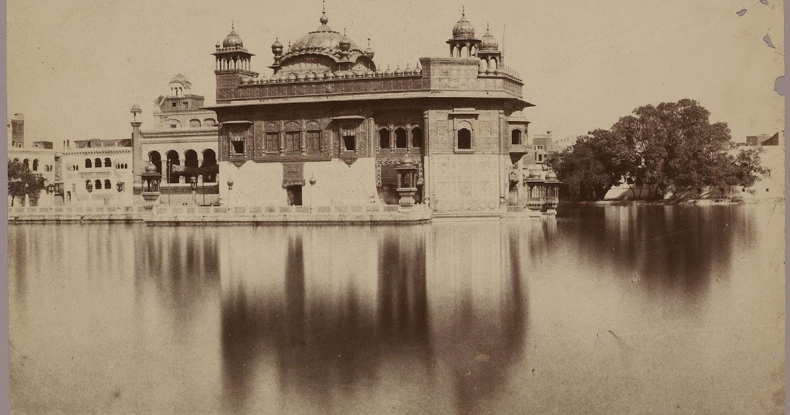
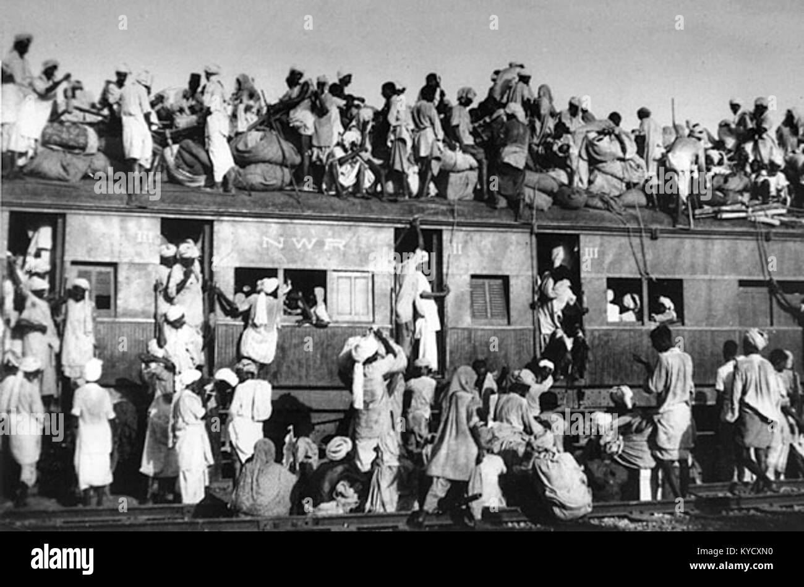

The history of Punjab is rich and complex, shaped by a variety of cultures, religions, and political influences over the centuries.

Ancient Period
Punjab, known as the land of five rivers (Jhelum, Chenab, Ravi, Beas, and Sutlej), has been inhabited since ancient times. It was part of the Indus Valley Civilization, one of the world's earliest urban cultures, around 2500 BCE. Over time, it witnessed the arrival of various groups, including Aryans, Persians, and Greeks.
Medieval Period
The region became significant during the rise of Sikhism in the 15th century, founded by Guru Nanak. The Sikh Gurus established a distinct cultural and religious identity, which led to the formation of a strong community in the area. This period also saw the establishment of the Mughal Empire, with Punjab becoming an important province.
Colonial Era
In the 19th century, the British took control of Punjab following the Anglo-Sikh Wars. They introduced significant changes, including the canal system, which transformed agriculture, and implemented various administrative reforms. This period was marked by socio-political movements, including the rise of nationalism.
Partition and Modern Era
The partition of India in 1947 had a profound impact on Punjab, leading to mass migrations and communal violence. The state was divided into Indian Punjab and Pakistani Punjab, each following different trajectories. Since then, Punjab has experienced economic developments, cultural revivals, and political changes, with a strong emphasis on agriculture and industry in Indian Punjab, while Pakistani Punjab remains a key political and cultural region in Pakistan.
